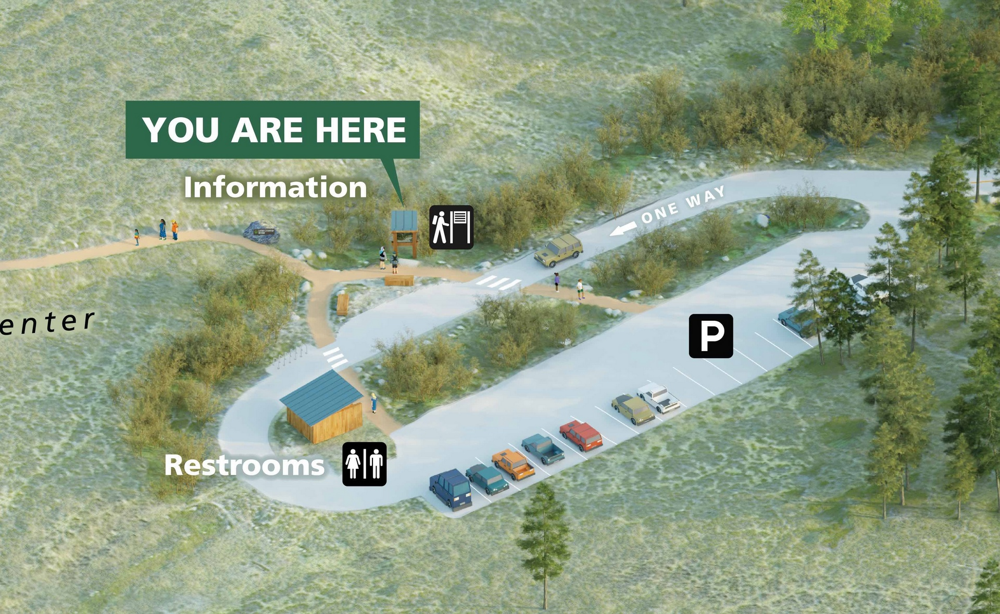
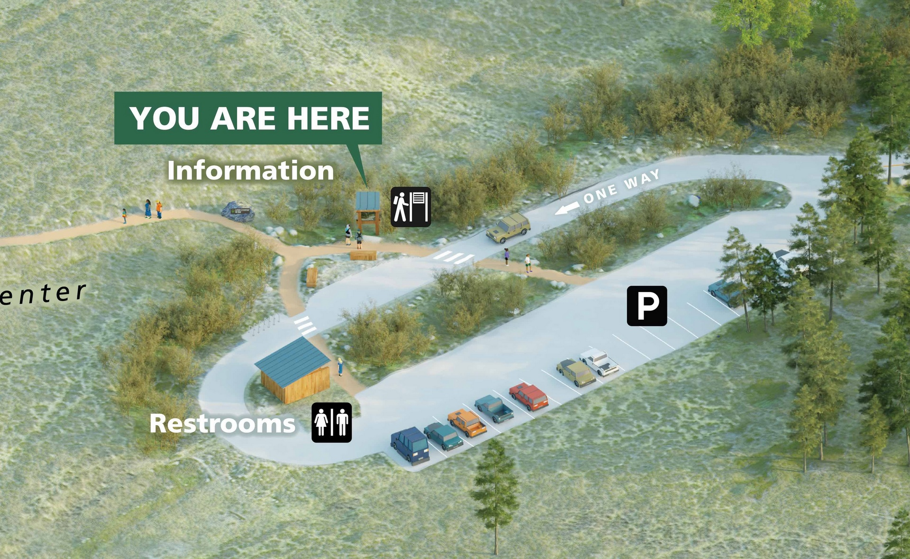
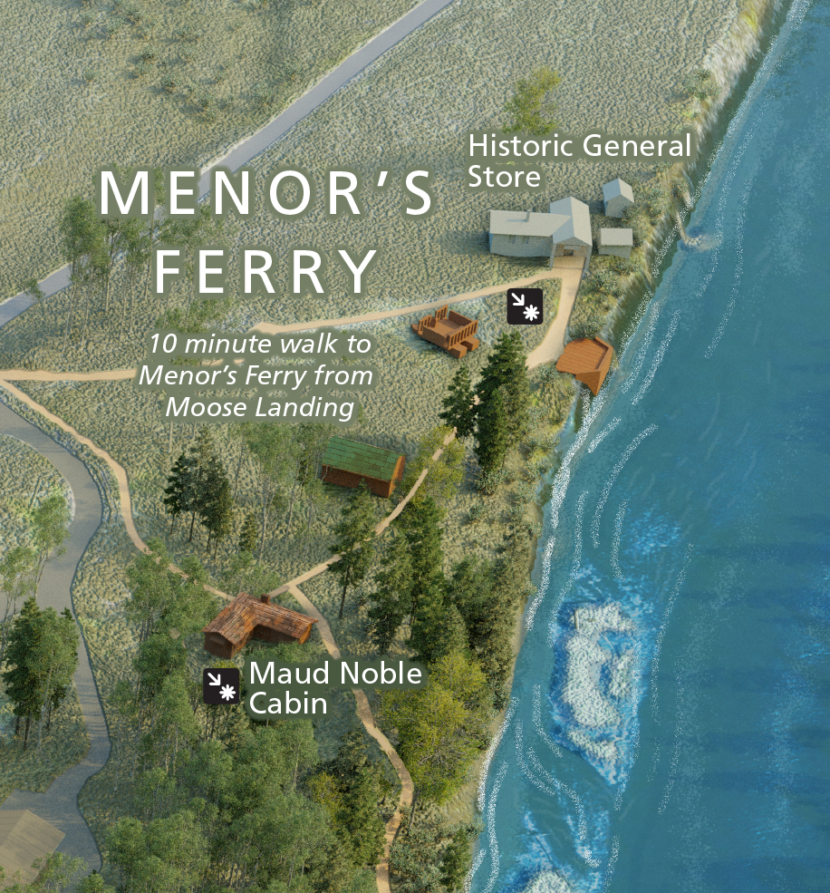
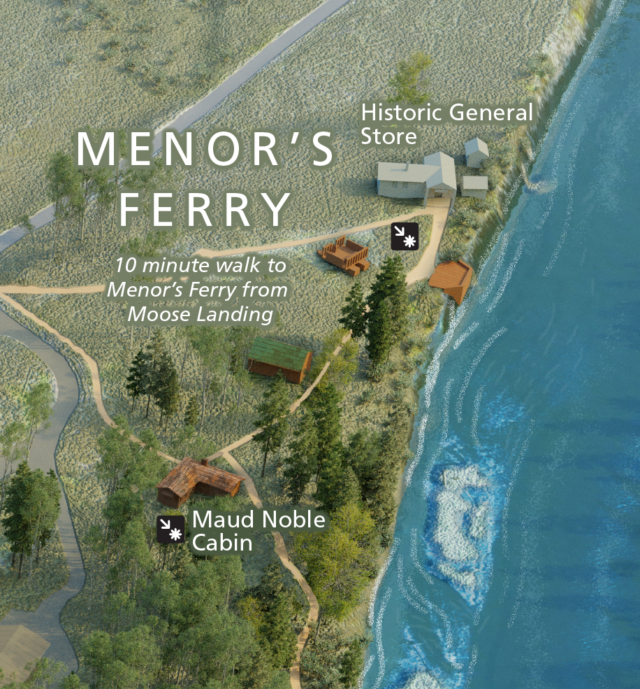

Laurence S. Rockefeller Preserve Map
Grand Teton National Park - June 2024

This map was a long and tedious but very fun journey for me.
The first big breakthrough in blender for me came with the discovery of particle systems, and the ability to place vegetation, (evergreens, apsens, and brush) based on three black and white vegetation class images.
The second was a suggestion from Alexander Guthrie, who told me to try modelling my buildings in Sketchup instead of blender.
I spent many hours smoothing terrain and cleaning up raw satellite imagery.
 

All of the people in this first map were rendered with no color, so their shadows would be accurate. Then they were painted individually in photoshop. The public accent buildings were given a glow and a touch more saturation to help them pop.

 
